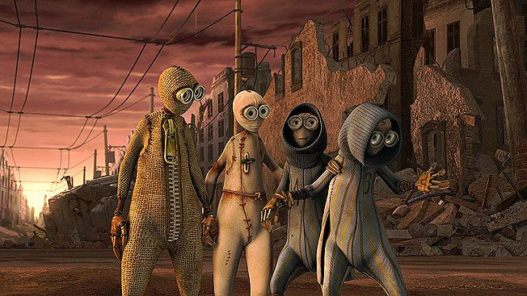
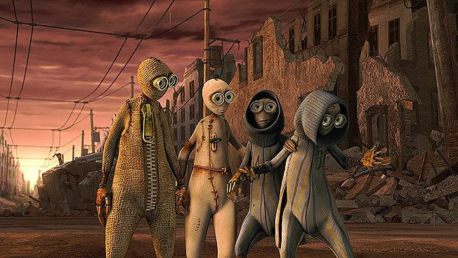

Sinopsis
Número 9 es una pelicula sobre grupo de pequeños seres que intentan salvar lo poco que queda de la civilización, después de que las máquinas diezmaran a la población. Este grupo está compuesto por nueve criaturas a las que un científico infundió vida poco antes de la catástrofe.
Director
Shane Richard Acker es un animador, director de cine y guionista, reconocido principalmente por haber dirigido el filme animado 9, basado en su cortometraje del mismo nombre que logró una nominación a los Premios Óscar.
Este es un video mio donde explico mi opinión personal sobre la pelúicula
.Explico los puntos más relevantes y transcendentes de la pelicula
Streaming de Numero 9
| Plataforma | Valoración | Precio |
|---|---|---|
| Amazon Prime Video | 4,6/5 | 3,99 |
| YouTube | 6,4/10 | 3,99 |
| Aple TV | 59/100 | 3,99 |
Personajes
Numero 9
El protagonista de nuestra historia, este fue el ultimo muñeco en ser creado el cual trae un espiritu aventurero al grupo y la perspicacia para preguntarse quian a hecho esto y encontrarlo hara dar justicia, al principio lo ven como un loco, muchos mueren por su culpa pero al final lo ven como el salvador.
Numero 1
Este es el primer muñeco creado, el se auto considera el lider del resto del grupo, tiene como secuaz al numero 8, el piensa que es mejor permanecer escondidos en una iglesia.
Numero 5
Un personaje miedoso que se dedica a visualizar desde lo alto del campanario la ciudad destruida y cartografiarla en un papel con la ayuda de numero 2.
Numero 2
El personaje mas inteligente del grupo, se dedica a crear ingeniosos aparatos y cachibaches con los objetos que encuentra en el yermo, el es el único que sale a explorar.
Numero 8
El fuerte del grupo, este personaje es algo misterioso ya que no habla, es la mano derecha de Numero 1 y el encargado de luchar y defender al grupo.
Shane Richard Acker
Es un reconocido animador y director de cine, nacido es EEUU en el año 1971, se hizo mundialmente conocido al dirigir y animar la pelicula "Numero 9". El estudio arquitectura en la "Universidad de Florida" tras graduarse en el año 1999 empezo a convertirse en cineasta, estudiando en el Taller de Animación de UCLA. Durante sus estudios creo The Hangnail , The Astounding Talents of Mr.Grenade y Numero 9, por este ultimo recibio un premio de estudiante y fue nominado para un premio de la Academia al mejor corto de animación. Luego del revuelo de la pelicula comenzo a trabajar como instructor en una clase de animación avanzada Escuela de Efectos Visuales de Gnomon. A partir de 2011, Acker formó Benthos Studio, una compañía de producción de animación con sus socios Greg Little, Jack Mitchell y Brown Bag Films.

Enemigos
Gato Bionico
Un gato construido a partir de desechos de metal, con unas fieras zarpas y una enorme cuchilla en el abdomen.
Tejedor
El segundo enemigo mas fuerte, atrapa a los personajes con y los y los guada dentro de su tela, tiene la habilidad especial de controlar y envaucar a sus rivales con los cuerpos de otros muñecos de trapo.
Master
El rival mas fuerte, este es el creador de los anteriores enemigos y el creador de las maquinas que destruyeron el mundo
Galeria de imágenes


 

Bibliografia
Toda la información reflejada en esta página se a extraido de: